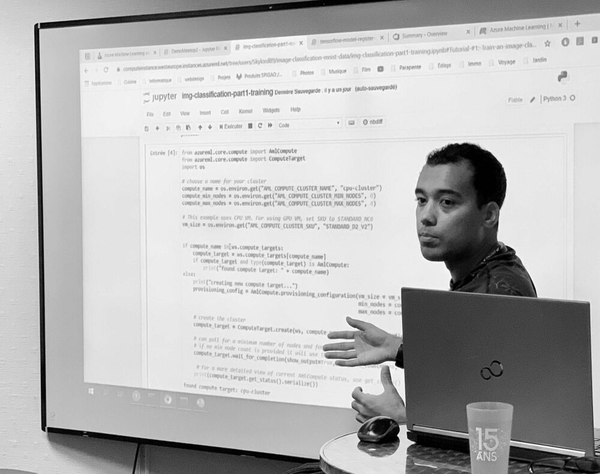

~/models
Modèles d'IA sur mesure
Machine learning, deep learning, du classifieur au réseau de neurones bien
profond. Entraînés, validés et documentés pour votre cas, pas un
model.fit() collé au hasard.
// EURL · ingénierie logicielle freelance
Je conçois des modèles d'IA sur mesure (machine learning, deep learning) et l'ingénierie logicielle solide qui va autour. Ça fait 10+ ans que ça dure, et j'aime toujours ça.
holistic@dev:~$ whoami
ingénieur logiciel freelance : je fais réfléchir des machines.
holistic@dev:~$ cat specialite.md
# IA sur mesure · Machine Learning · Deep Learning
holistic@dev:~$ uptime
10+ ans en prod, 0 hype gratuite.
holistic@dev:~$ ▋

Derrière HOLISTIC DEVELOPMENT, il y a David Toussaint, développeur IA senior basé à Toulouse, et une conviction toute simple : un bon logiciel, c'est un système qu'on comprend en entier, pas juste la ligne de code du vendredi soir.
Plus de 10 ans à construire, apprendre et transmettre autour de l'IA et du logiciel. Concrètement, j'aide les entreprises qui veulent de l'IA qui marche vraiment : du problème métier mal défini jusqu'au modèle en production qui tient la route. Pas de recette magique recopiée d'un tutoriel, mais des modèles pensés pour votre problème et vos données.
L'IA doit rester une extension de l'intelligence humaine, jamais une fin en soi.
// projets marquants : Airbus · Medexprim · Boostheat · Spigao · Akawan · Finvens · Iris Prevention
~/models
Machine learning, deep learning, du classifieur au réseau de neurones bien
profond. Entraînés, validés et documentés pour votre cas, pas un
model.fit() collé au hasard.
~/engineering
APIs, back-ends, data pipelines, outils internes. L'IA c'est bien, mais sans plomberie solide autour, ça reste une démo. Je fais les deux.
~/production
Un notebook qui tourne ≠ un produit. Je fais le pont : packaging, déploiement, monitoring, MLOps. Bref, que ça survive après la démo.
~/advice
Parfois le meilleur service, c'est un avis honnête sur la faisabilité, avant de cramer le budget GPU. Cadrage, choix techniques, second regard.
~/training
Je suis aussi formateur : je dispense des formations sur l'intelligence artificielle et le machine learning, du concept qui tient la route jusqu'aux mains dans le code. Parce que transmettre, c'est la moitié du métier.
Les briques que j'utilise le plus. La liste bouge selon le projet : l'outil sert le problème, jamais l'inverse.
$ IA / ML
$ ingénierie / ops
Parce qu'un modèle d'IA n'existe jamais tout seul. Il vit au milieu de données, d'utilisateurs, de contraintes métier, de serveurs qui tombent à 3h du matin.
Holistique, c'est regarder le système entier, pas seulement le bout d'algorithme à la mode. C'est comme ça qu'on livre quelque chose qui tient.